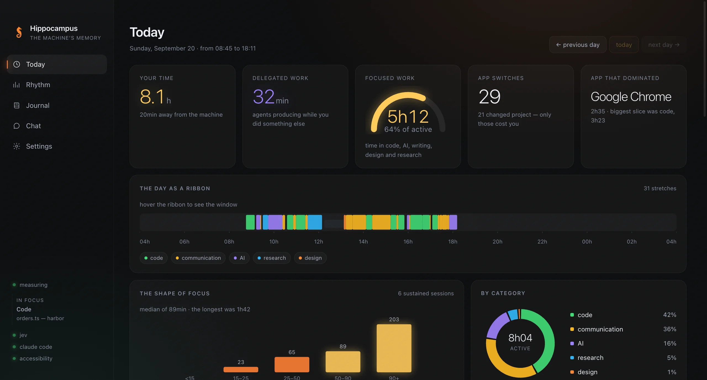
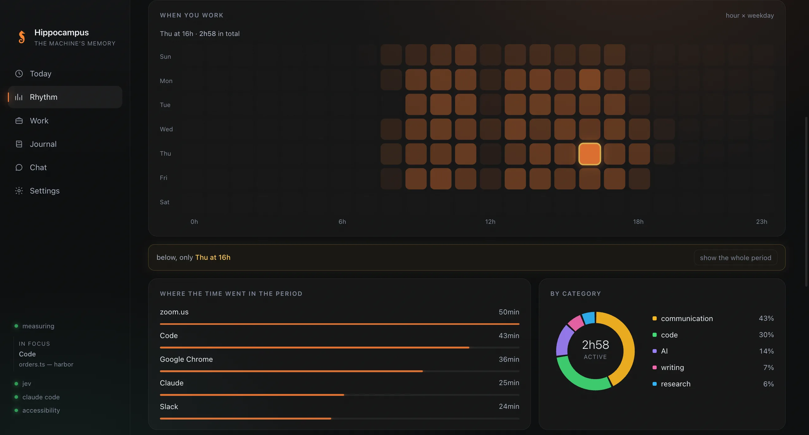
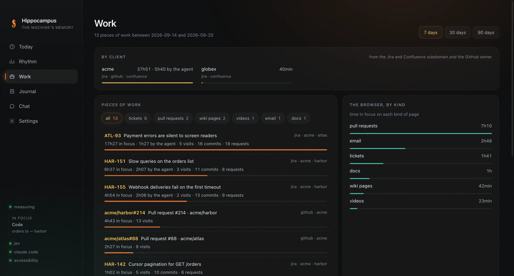
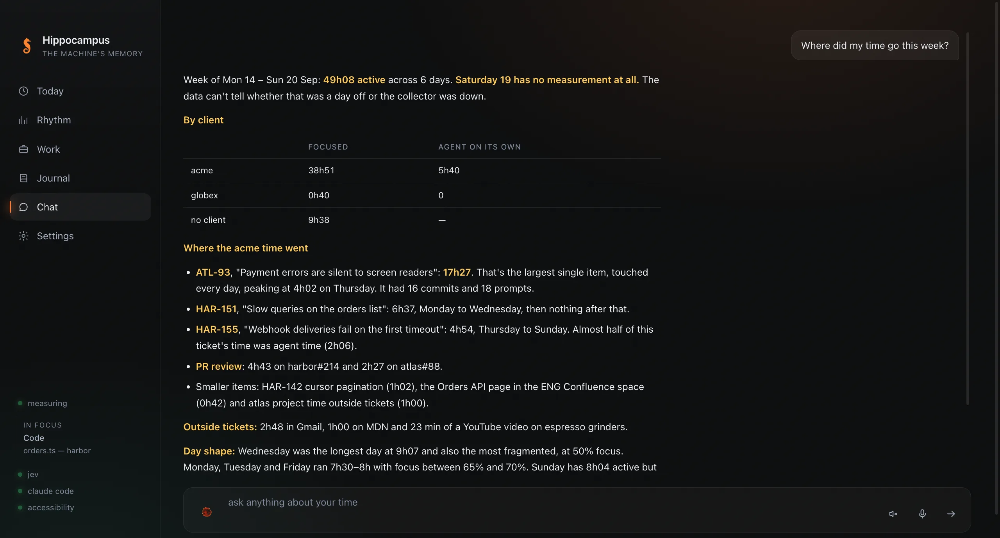
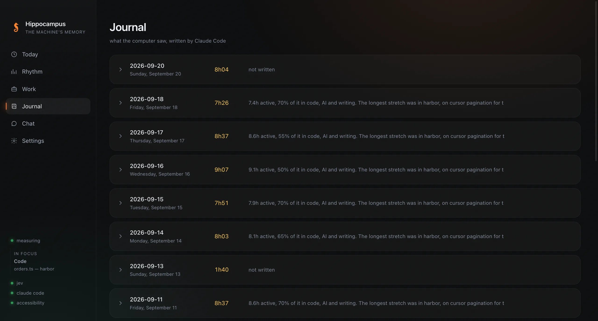

A voice you can interrupt
Live, turn by turn, in your language. What you say shows as you say it, the sphere moves with your voice, and it closes itself after ten quiet seconds.
Open source · macOS · stored only on your Mac
Hippocampus remembers where your time went — every window, ticket and agent, kept on your Mac — and acts when you ask: it looks at your screen, points, clicks and talks back, out loud.
macOS 13 or later, Apple silicon. Signed and notarized; it updates itself. What's new in v%VERSION%
No server, no account, no dashboard. Works best with Claude Code and jev.

Say the word, or click the sphere. It already knows your day — which ticket, which project, what you asked your agents — so "that ticket from this morning" means something.
Live, turn by turn, in your language. What you say shows as you say it, the sphere moves with your voice, and it closes itself after ten quiet seconds.
At the screen you are on, at that moment, with its own windows left out. The picture goes to Claude Code for that answer and is not kept.
A spark of the core flies to the place and names it. Asked to, it clicks — and puts your pointer back where you left it. It will not send, buy or delete unless that is what you asked.
Two sentences when it speaks, a few lines when you read. A click on the sphere, or the stop button, and whatever it was doing stops there.
The sources are what macOS, your browsers, git and your agents already write down. The core reads them into one database on your Mac. What leaves it goes under your own login and key: window titles to jev, to be labelled; the day to Claude Code, to be written up, and a picture of your screen when you ask it to look; and your voice to OpenAI, only when you talk to it.
Your Mac
Outside your Mac · your own login and key
Text and events. Everything below is read from what your Mac already writes down.
The app in front, the window title, the tab you were on, and when you stepped away.
Keys, clicks and scroll as counts, which is what tells writing from reading. Words only come from Codex’s Computer History, if you use it — never from chats, mail or password managers, and one switch in Settings turns them off.
Every minute an agent worked for you — and the stretch it worked while you were away counts as work, not as absence.
Commits, commands, and what you asked Claude Code and Codex, joined to the time they happened in.
The microphone or camera open for a call — named after the meeting, if you let it read your calendar — the track in the background, the screen each window was on.
Each window is sorted into code, AI, research, communication, writing, design, admin or leisure — and left unlabelled rather than guessed.
It measures on its own. The labels and the writing come from two tools you bring, each under your own login or key.
Required
macOS 13 or later, and one permission — Accessibility — so it can read window titles.
For the full picture
Writes the day's journal, keeps the notes and answers the chat, through the login already on your Mac. Without it everything is still measured and charted — nothing is written.
For the full picture
Labels every window with a category and a project, and focus is counted from those labels. Without a key only what has an obvious purpose is sorted — an editor, Slack, a pull request — so focus and projects come out partial.
Optional
The journal and the notes are plain Markdown in a folder you pick; Obsidian is the nicest way to read them. An OpenAI key lets you talk to it out loud.
Rhythm
Hour by weekday, over a week, a month or three. Click a cell and every chart beneath it answers the obvious question — what was I actually doing on Thursdays at four?

Work
A Jira tab, a question to Claude Code and a commit that name the same ticket become one line, with the client behind it read from the address. Work on a branch counts for the ticket it is named after. Click a ticket for every moment that touched it, in order.

Chat
Type or speak. Claude Code answers from the local database — with a table when a table is the answer — and a live voice you can interrupt, if you want one.

Notes
At the close of the day it reads what you asked your agents for and keeps the few durable things in your own notes: a project that moved, a problem understood, what someone is waiting for. It writes into the note that already carries the subject, in the section it already has. Most days keep one thing or none — and you can write your own at any time.

Journal
When the day closes — at four in the morning, unless you pick another hour — a summary of it lands in your Obsidian vault. A record of what happened — never a verdict on the person who did it.

Open source, with no account, no server and no subscription. If it gave you back an afternoon, buy me a lunch.
Buy me a lunch · $15Paid through Stripe. Nothing about your day goes with it.
{kind=link}
{kind=link}
{kind=link}
{kind=link}